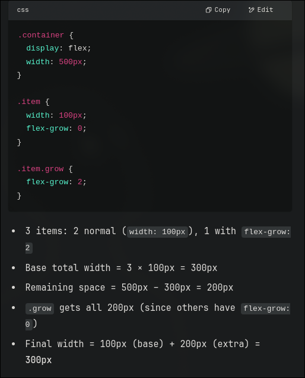

FlexBox
used to move the element is a much better way
flex and grid are mostly used to create responsive websites
use display : flex
when you enable flex , you can
justify-content: center
align-content: center
- Justify
- considers the main axis
- Align
- considers the cross axis
- Place
- consider both the axes
- Content
- When you want to align the item and the spacing between other items
- Items
- When you only want to align the item within its own boundaries irrespective of other elements
- Self
- For that individual element
justify-content
- space-around
- space-between
- space-evenly
- center
- end
- flex-end
- flex-start
- left
- normal
- right
- stretch
- start
- inherit
- initial
- revert
- rever-layel
- unset
!IMPORTANT: when you specify to flex at some direction - be sure to have mentioned the amount of space it has to take flex:1
Align content: this is very similar properties and a few additions like baseline etc
flex also has flex-direction that has values like :
- column
- column-revers
- row
- row-reverse
in general - flex direction is the main axis and the perpendicular axis is called the cross-axis
The justify-content work with respect to the main axis
The align-items work with respect to the cross axis
The align-content work with respect to the cross axis
align items - aligns the individual element in a single row/column
align-content - aligns multiple rows/columns
wrap wraps the content within the size
wrap-reverse wraps the content from the bottom as default one wraps from the top
flex-flow used as a short-hand to specify both the flex direction and wrap value
gap used to add gap between inner elements
can also define row-gap and column-gap
you can use short-hand gap: <row-gap> <column-gap>
all of these are almost container properties that cannot be used for element that has no inner elements
One famous use of display:flex is using order so that it comes in that order [ displayed in that order ]
Generally you can just display flex the container and then the inner elements doesn't have to be specified with display:flex
if order of two elements is same then its rendered null for both and the one specified first in the html is displayed first
flex-grow is the one where we can grow the item specified if there is any remaining space :
.item{
flex-grow: 1;
}
.item1{
flex-grow: 5; /*doesn't matter if its 5 or 3 or 2 -that is the just the priority */
flex-shrink: 4; /*shrinks 4x of the above elements [ NOT BY DEFAULT ] only when necessary */
}
flex-shrink is explained above , one thing to remember is it shrink only when necessary
its the same for flex-grow = but in most cases- there is alwasy a remaining space to occupy

align-self a very easy way to align a single element inside any container
this overrides align-items , assume for when you have aligned items for the whole container and now want to change only a single special case element in it.
Next